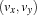
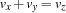
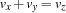

1.2 Getting Started
This section makes the reader familiar with the CPI by implementing a propagator for the constraint  and explains the steps to be taken to get it running.
and explains the steps to be taken to get it running.
1.2.1 Prerequisites
The implementation of new propagators via the CPI requires a correctly installed Oz system. The following points should be obeyed.
- Include File.
To obtain the functionality provided by the CPI include the file
mozart_cpi.hhin the appropriate C/C++ source files.- Platform-independent compilation and linkage of native functors.
Use
oztoolto compile C/C++ source programs (oztool c++) and to link object files (oztool ld). It has the right options resp. search paths set depending on your current platform and environment. See Section 15.2 of ``Application Programming'' for details onoztool.- Naming Conventions.
Identifiers starting with
OZ_are provided by the CPI and must not be defined by the programmer.
1.2.2 Building a Propagator
This section explains by means of an example the constraint propagator interface of Oz. We implement the propagator for the constraint . For the sake of clarity we use a rather straightforward algorithm here. The operational semantics will provide as much pruning/propagation as possible. This is in contrast to the constraint supplied by the finite domain library (see Section 5.11 of ``System Modules''), which reasons only over bounds of domains.
A Propagator's Class Definition
CPI class OZ_Propagator
The emulator requires a uniform way to refer to all instances of propagators. This is realised by providing the class OZ_Propagator, which is the class all propagators have to be inherited from. Therefore, the emulator can refer to any propagator by a pointer of type (OZ_Propagator *) The class OZ_Propagator is in terms of C++ a so-called abstract base class, i. e. no object of such a class can be created (since for at least one member function intentionally no implementation is provided, indicated by an appended =0. Instead, it defines the minimal functionality required of all classes inherited from it. The following code depicts a fragment of the definition of the class OZ_Propagator defined by the CPI (in the file mozart_cpi.hh). It shows all member functions which have to be defined in a derived class.
class OZ_Propagator {
public:
OZ_Propagator(void);
virtual OZ_Term getParameters(void) const = 0;
virtual size_t sizeOf(void) = 0;
virtual void gCollect(void) = 0;
virtual void sClone(void) = 0;
virtual OZ_Return propagate(void) = 0;
virtual OZ_PropagatorProfile * getProfile(void) const = 0;
}
There are basically three groups of member functions dealing with reflection, memory management, and constraint propagation. Member functions concerned with reflection allow to obtain information about a certain instance of a propagator. For example, this is used to generate a message in case of a top-level failure.
getProfile()
For each propagator class, one instance of class OZ_PropagatorProfile is allocated. This class is intended to give the Oz Profiler access to some information about this class, for instance a count of the number of invocations of propagators belonging to this class. This function must return a pointer to this instance, but otherwise the programmer needs not to be concerned about it. Note that for the profile function to be shared for all instances, it has to be declared static.
getParameters()
The arguments of a propagator are returned by getParameters() as a list represented as an Oz heap data structure. This is denoted by the return type OZ_Term.
sizeOf()
Memory management of Oz requires to know the size of a propagator. The member function sizeOf() implements this functionality. Its return type is defined in the standard header <stddef.h>.
gCollect() and sClone()
Further, on garbage collection and space cloning references into heap which are held in the state of the propagator (or somehow reachable by a propagator) have to be updated, since items stored on the heap are occasionally moved to a new location. The member functions gcollect() and sClone are provided for that purpose. The definition of these functions is identical for most propagators. For an example where the difference of both functions matters see Section 1.7.2.
propagate()
The most important member function is propagate(). It is responsible for the actual constraint propagation and is called by the emulator when the propagator's execution state is switched to running. The returned value of type OZ_Return indicates the runtime system the outcome of the propagation performed by propagate().
The implementation of the addition propagator starts with the definition of the class AddProp. The definition of the member function propagate() is explained in Section ``The Propagation Part of a Propagator''.
#ifndef NDEBUG
#include <stdio.h>
#endif
#include "mozart_cpi.hh"
class AddProp : public OZ_Propagator {
friend OZ_C_proc_interface *oz_init_module(void);
private:
static OZ_PropagatorProfile profile;
OZ_Term _x, _y, _z;
public:
AddProp(OZ_Term a, OZ_Term b, OZ_Term c)
: _x(a), _y(b), _z(c) {}
virtual OZ_Return propagate(void);
virtual size_t sizeOf(void) {
return sizeof(AddProp);
}
virtual void gCollect(void) {
OZ_gCollectTerm(_x);
OZ_gCollectTerm(_y);
OZ_gCollectTerm(_z);
}
virtual void sClone(void) {
OZ_sCloneTerm(_x);
OZ_sCloneTerm(_y);
OZ_sCloneTerm(_z);
}
virtual OZ_Term getParameters(void) const {
return OZ_cons(_x,
OZ_cons(_y,
OZ_cons(_z,
OZ_nil())));
}
virtual OZ_PropagatorProfile *getProfile(void) const {
return &profile;
}
};
OZ_PropagatorProfile AddProp::profile;
The propagator stores in its state, i. e. in its data members, references to the variables it is imposed on (namely _x, _y and _z of type OZ_Term. The constructor of the class AddProp, which is invoked by the header function, initialises the data members with the arguments of the corresponding Oz application. The member function sizeOf() returns the number of bytes occupied by the addition propagator using C/C++'s sizeof operator. The CPI provides for the functions OZ_gCollectTerm() and OZ_sCloneTerm(), which are used for the implemention of the member functions gcollect() and sClone(), which apply gCollectTerm() resp. sCloneTerm() to all data members of type OZ_Term. The construction of lists is supported by the interface abstractions OZ_cons() and OZ_nil() (see Section 7.7 of ``Interfacing to C and C++''). The function getParameters() straightforwardly composes a list containing the references to the arguments hold in the propagator's state. The reason for the friend declaration will become clear in Section ``Creating a Propagator''.
The Propagation Part of a Propagator
The member function propagate() implements the algorithm which defines the operational semantics of the propagator, i. e. the amount of constraint propagation achieved at each invocation.
The algorithm used here rebuilds the domains of the variables always from scratch. Therefore, auxiliary domains for each variable are introduced which are initially empty. For all values of the domains of  and
and  it is checked if there is a consistent value in the domain of
it is checked if there is a consistent value in the domain of  . If so, the values are added to the corresponding auxiliary domains. Finally, the domains of the variables are constrained,i. e. intersected, with the corresponding auxiliary domains. Consequently, the core of the program code consists of two nested loops iterating over all values of the domains of and .
. If so, the values are added to the corresponding auxiliary domains. Finally, the domains of the variables are constrained,i. e. intersected, with the corresponding auxiliary domains. Consequently, the core of the program code consists of two nested loops iterating over all values of the domains of and .
#define FailOnEmpty(X) if((X) == 0) goto failure;
OZ_Return AddProp::propagate(void)
{
OZ_FDIntVar x(_x), y(_y), z(_z);
OZ_FiniteDomain x_aux(fd_empty),
y_aux(fd_empty),
z_aux(fd_empty);
for (int i = x->getMinElem(); i != -1;
i = x->getNextLargerElem(i))
for (int j = y->getMinElem(); j != -1;
j = y->getNextLargerElem(j))
if (z->isIn(i + j)) {
x_aux += i;
y_aux += j;
z_aux += (i + j);
}
FailOnEmpty(*x &= x_aux);
FailOnEmpty(*y &= y_aux);
FailOnEmpty(*z &= z_aux);
return (x.leave() | y.leave() | z.leave())
? OZ_SLEEP : OZ_ENTAILED;
failure:
x.fail();
y.fail();
z.fail();
return OZ_FAILED;
}
CPI class OZ_FDIntVar
A propagator needs direct access to the variables it is imposed on. The interface class OZ_FDIntVar provides member functions to access variables in the constraint store. The constructor dereferences a variable in the store and stores the dereferenced information in the state of the newly created object. The operators * and -> are overloaded to provide direct access to the finite domain of a variable in the store or to invoke member functions of the class OZ_FiniteDomain (see below).
CPI class OZ_FiniteDomain
The finite domain of a variable is represented by an instance of the class OZ_FiniteDomain, modifying their value is immediately visible in the constraint store. Calling the constructor with the value fd_empty creates an empty finite domain, as used for the auxiliary variables here. The operator += adds a value to a domain. The operator &= intersects two domains, modifies the domain on the left hand side and returns the size of the intersected domain. The member function getMinElem() returns the smallest value of the domain and getNextLargerElem(i) returns the smallest value of the domain larger than i (both return -1 when they reach their respective end of the domain). Testing whether a value is contained in a domain or not can be done by the member function isIn().
The implementation
The implementation of the constraint proceeds as follows. First the variables in the store are retrieved and stored in the local C/C++ variables x, y and z. The corresponding auxiliary domains are held in the variables x_aux, y_aux and z_aux, which are initialised to empty domains. Two nested for-loops enumerate all possible pairs  of values of the domains of and . Each loop starts from the smallest value of the domain and proceeds until -1 is returned, indicating that there is no larger value. If there is a value  in the domain of satisfying the relation , these values are added to the appropriate auxiliary domains. After completing the nested loops, the domains of the variables are constrained by intersecting them with the auxiliary domains.
in the domain of satisfying the relation , these values are added to the appropriate auxiliary domains. After completing the nested loops, the domains of the variables are constrained by intersecting them with the auxiliary domains.
FailOnEmpty()
The macro FailOnEmpty() branches to the label failure if its argument results in the value 0. Thereby, constraining the domain of a variable to an empty domain causes the execution to branch to label failure and eventually to return OZ_FAILED to the emulator. The return value of the member function leave() of class OZ_FDIntVar is used to decide whether the propagator returns OZ_SLEEP or OZ_ENTAILED. The return value OZ_ENTAILED indicates entailment and is returned if all variable's domains are singletons. Otherwise, OZ_SLEEP is returned and the propagator is resumed when at least one of its variables is constrained again.
Before leaving propagate(), the member function leave() has to be called. If the variable's domain has been constrained by the propagator, it causes the scheduler to switch all propagators waiting for further constraints on that variable to become runnable. The return value of leave is 0 if the domain became a singleton, otherwise 1. This information is used to decide whether a propagator is entailed or not. In case the propagator encounters an empty domain or any other inconsistency, the member function fail() has to be called to do some cleanups before propagate() is left.
Creating a Propagator
The header function
Before a propagator can be created and introduced to the emulator, its variables must be sufficiently constrained, e.g. the variables must be constrained to finite domains. In case, only a subset of variables is sufficiently constrained, the computation will suspend and resume again when more constraints become available. This is checked by the header function, which is called by the runtime system, when an appropriately connected Oz abstraction is applied. For our example, this function is called fd_add.
Determining when to resume a propagator
Further, when a propagator is imposed on a variable, it has to be determined which changes to the domain resume the propagator again. The alternatives are to resume a propagator if the variable's domain becomes a singleton, the bounds are narrowed or some value is removed from the domain.
The macros OZ_BI_define and OZ_BI_end are provided to allow the implementation of C/C++ functions which are compliant with the calling conventions of Oz's emulator.
The first argument of the macro OZ_BI_define defines the name of the function, the second argument the number of input arguments of type OZ_Term, and the third argument the number of output arguments of type OZ_Term (for a propagator this will always be 0). The macro OZ_args provides access to the actual argument. The name of the function has to obey certain rules to be compatible with the module Foreign which enables linking object files to a running Oz runtime system. The definition of the macro OZ_EXPECTED_TYPE is explained in Section 1.2.6 of ``The Mozart Constraint Extensions Reference''.
OZ_BI_define(fd_add, 3, 0)
{
OZ_EXPECTED_TYPE(OZ_EM_FD","OZ_EM_FD","OZ_EM_FD);
OZ_Expect pe;
OZ_EXPECT(pe, 0, expectIntVar);
OZ_EXPECT(pe, 1, expectIntVar);
OZ_EXPECT(pe, 2, expectIntVar);
return pe.impose(new AddProp(OZ_in(0),
OZ_in(1),
OZ_in(2)));
}
OZ_BI_end
Using OZ_EXPECT
The macro OZ_EXPECT ensures that incompatible constraints on the propagator's parameters lead to failure and insufficient constraints cause the execution to be suspended until more constraints become known. An object of class OZ_Expect collects in its state all variables the propagator is to be imposed on. Such an object is at the first argument position of OZ_EXPECT. The second argument of OZ_EXPECT determines which argument of fd_add shall be checked. The member function expectIntVar() of class OZ_Expect expects a variable to be already constrained to a finite domain. If a variable is sufficiently constrained, it is stored in the state of the object pe. The second argument of expectIntVar is used to determine what kind of domain pruning causes a propagator to be resumed. Its default value is fd_prop_any, i. e. a propagator is resumed on any pruning of the domain. For further details see Section 1.4.
Creation of a propagator
Finally, the actual propagator is created by calling its constructor via the application of the new operator. The reference to the newly created propagator is passed as argument to impose(), a member function of OZ_Expect, which executes the propagate() method and introduces the propagator to the emulator.
Connecting Propagators and Oz Code
Propagators are connected with Mozart Oz 3 as native functors according to Section 15.3 of ``Application Programming''. To enable that one has to define a function oz_init_module.
OZ_BI_proto(fd_add);
OZ_C_proc_interface *oz_init_module(void)
{
static OZ_C_proc_interface i_table[] = {
{"add", 3, 0, fd_add},
{0,0,0,0}
};
AddProp::profile = "addition/3";
printf("addition propagator loaded\n");
return i_table;
}
The line AddProp::profile = "addition/3"; assigns explicitly the name "addition/3" to the propagator. The default name is "<anonymous propagator>".
Before a native functor can be loaded it must be compiled according to Section 15.2 of ``Application Programming''. Supposing the C/C++ code is stored in the file ex_a.cc, then the following lines create the object file.
oztool c++ -c ex_a.cc -o ex_a.o
oztool ld -o ex_a.so-linux-i486 ex_a.o
The Oz code below loads the object file ex_a.so-linux-i486 and makes the Oz abstraction FD_PROP.add available. The procedure FD_PROP.add takes 3 arguments and imposes the addition propagator implemented in the sections before.
declare FD_PROP
local
FD_PROP_O = {{New Module.manager init}
link(url: 'ex_a.so{native}' $)}
in
FD_PROP = fd(add: FD_PROP_O.add)
{Browse FD_PROP}
end
After feeding in the above Oz code the addition propagator is available and can be used. To do so feed the following code in line by line. The results are shown in the Oz browser (shown in comments appended to lines).
declare X Y Z in
{Browse [X Y Z]} % [X Y Z]
[X Y Z] ::: 0#10 % [X{0#10} Y{0#10} Z{0#10}]
{FD_PROP.add X Y Z} % [X{0#10} Y{0#10} Z{0#10}]
X :: [1 3 5 7 9] % [X{1 3 5 7 9} Y{0#9} Z{1#10}]
Y :: [1 3 5 7 9] % [X{1 3 5 7 9} Y{1 3 5 7 9}
% Z{2 4 6 8 10}]
Y <: 5 % [X{1 3 5 7 9} Y{1 3}
% Z{2 4 6 8 10}]
Y \=: 3 % [X{1 3 5 7 9} 1 Z{2 4 6 8 10}]
Troubleshooting
Debugging a propagator is usually done by gdb [RMS92] in conjunction with emacs [Sta91]. The Oz Programming Interface provides adequate means to support debugging based on these two tools. We refer the reader to Section B.3 of ``The Oz Programming Interface'' for details.